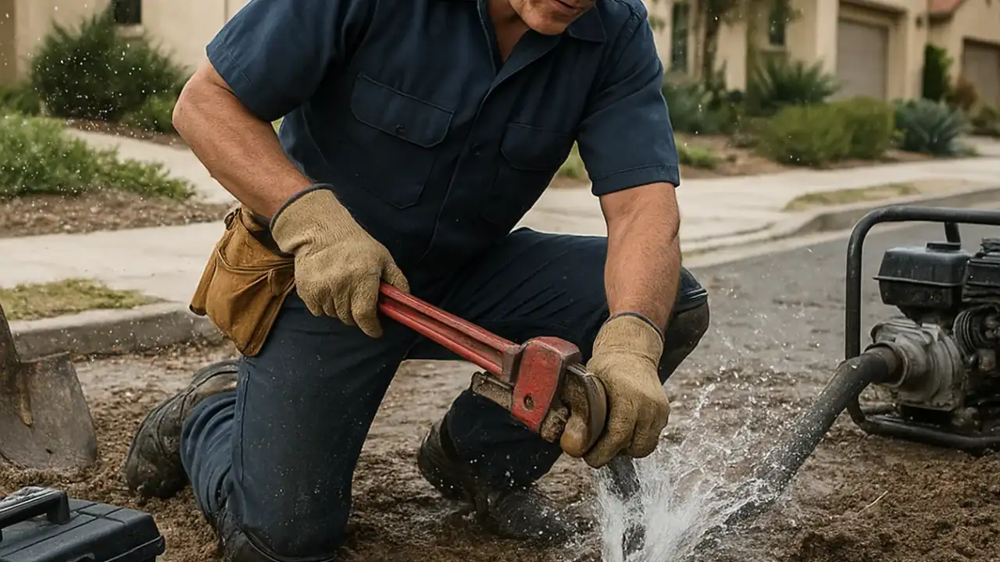

While you wait, the most useful thing is to have the water off and the area safe. Turn off the main water supply if you have not already, and do not keep running water or flushing a toilet that is backing up. Move valuables away from the water if you can do so safely, and note where the water is coming from so you can tell the technician when they arrive. The dispatcher will ask what is happening and where the water is, so the technician arrives with the right tools. Call +1 (619) 612-9370 any time, day or night.
Help fast, day or night
Emergency plumbing help in California, 24 hours a day
A burst pipe, a severe leak or a water heater that stops working does not wait for office hours. Our emergency plumbing services in California are built for exactly those moments: you call, a local dispatcher confirms your visit shortly, and a technician comes out to stop the damage first and then fix the cause.
What this service is: Emergency plumbing services are urgent repairs for plumbing problems that cannot wait, such as burst pipes, severe leaks, clogged drains that back up, and malfunctioning water heaters. The first job is always to make the home safe and stop water doing more damage; the full repair and the checks that prevent a repeat come right after.

Careful work. Honest options.
About this service
Understanding emergency plumbing services in California
Emergency plumbing in California means urgent repairs and maintenance for plumbing disasters: burst pipes, severe leaks and water heaters that stop working. These are the jobs where every hour matters, because water left running can damage floors, walls and belongings, and a home without safe water flow is not a home you can use.
California adds its own reasons for emergencies. Heavy rains can overwhelm drains, older pipework can fail without warning, and after an earthquake even a small leak needs a fast look before it becomes a large one. That is why the service runs 24/7: the problem arrives when it arrives, and the response has to match it.
- ✓ Rapid response times
- ✓ 24/7 availability, including nights and weekends
- ✓ Expert diagnostics on the spot
- ✓ Advice that prevents the next emergency
Not every plumbing problem is an emergency, and knowing the difference saves you money. A burst pipe, a severe leak, sewage backing up, or a water heater flooding the floor cannot wait. A dripping tap, a slow drain, or a toilet that runs can usually wait for a planned visit. If you are not sure, call and describe what is happening: the dispatcher will tell you honestly whether it needs an urgent visit or whether it can be booked normally. And if water is running anywhere it should not be, turn off the main water supply first, then call.
What's included
What our emergency plumbing services include
An emergency call is not just a fast van. It covers the whole job, from the first phone call to the final check that the repair holds and the cause is understood.
✓
24/7 emergency response
We answer around the clock and send a technician to urgent issues whenever they arise, including nights, weekends and holidays, so you are never left waiting with water running.
✓
Thorough inspection first
Before any repair, our technicians inspect the problem properly to identify all underlying issues, not just the visible one, so the fix is complete rather than temporary.
✓
Quality repairs that hold
We use high-quality materials and equipment for all repairs. In an emergency the temptation is a quick patch; our aim is a repair that lasts, so the same problem does not come back next week.
✓
Expert advice for afterwards
Once the urgent work is done, our team explains what caused the problem and how to maintain your plumbing system, so you know what to watch for and how to prevent future emergencies.
✓
Water shut-off and damage control
The first job on every emergency visit is to stop the water and make the area safe. A burst pipe is isolated, a severe leak is contained, and the damage is stopped from getting worse before any repair begins.
✓
Temporary repair when a permanent fix must wait
Some emergencies need the damage stopped immediately, even if the permanent repair needs parts or daylight. We make a sound temporary repair to stop the water, then agree the permanent repair with you, with its own estimate, rather than leaving you with a patch that fails.
How it works
What to expect during emergency plumbing services
01
Initial assessment
Upon arrival, our technician assesses the situation to determine the extent of the problem and the best course of action. This is the step that decides everything else: what is safe, what needs stopping first, and what can wait until the repair is planned.
02
Immediate repairs
Our team prioritises urgent repairs to stop leaks or other issues, shutting off the water where needed and making the home safe and functional again before anything else is discussed.
03
Detailed diagnostics
Using tools like plumbing snakes and water pressure gauges, we diagnose the underlying issues behind the emergency, so a burst pipe or a backed-up drain is treated at its cause rather than only at its symptom.
04
Final inspection
After repairs, a thorough inspection ensures everything is functioning correctly and meets California plumbing codes, so the repair is not only fast but properly finished.
05
Customer education
We give you clear tips and advice on maintaining your plumbing system to prevent future emergencies, including what to do first if a similar problem ever happens again.
During your visit
What happens during your visit
Here is what happens when our technician visits, in order:
- The call and the dispatch: you call, and a local dispatcher confirms your visit shortly. The dispatcher will ask what is happening, where the water is, and whether you can see where it is coming from. That is so the technician arrives with the right tools and parts for your problem, not just a general kit.
- What to do while you wait: if water is running, the first advice is usually to turn off the main water supply. The dispatcher will talk you through finding it if you are not sure where it is. Shutting the water off stops the damage getting worse while the technician is on the way, and it is the single most useful thing you can do in a plumbing emergency.
- Arrival and immediate damage control: on arrival, the technician's first job is to stop the damage, not to start a full repair. That means shutting off the water at the main or at the fixture, containing the water that is already out, and making the area safe. A burst pipe is isolated first; the permanent repair comes second.
- Initial assessment: once the water is stopped, the technician assesses the situation to determine the extent of the problem: where the water came from, what failed, and whether anything else is damaged. In an emergency the visible problem is often not the whole problem, and a proper inspection finds the underlying issue before the repair starts.
- Immediate repair to stop the problem: the technician prioritises the urgent repair, whether that is replacing a burst section of pipe, sealing a severe leak, or clearing a drain that is backing up. The aim is a repair that holds, using quality materials, not a quick patch that fails again next week.
- Detailed diagnostics: once the urgent problem is under control, the technician diagnoses the underlying cause using tools such as plumbing snakes and water pressure gauges. A burst pipe may have been caused by pressure, corrosion or freezing; a backup may be caused by a blockage further down the line. Fixing the cause is what stops the emergency coming back.
- Final inspection: after the repair, a thorough inspection ensures everything is functioning correctly and meets California plumbing codes. Water is turned back on slowly, every joint and connection is checked for leaks, and the affected fixtures are tested.
- Advice for afterwards: before leaving, the technician explains what happened, what was fixed, and what to watch for. That includes clear tips on maintaining your plumbing system to prevent future emergencies, and honest advice on whether any further work is needed, such as replacing an ageing section of pipe rather than waiting for it to burst again.
Questions about the emergency visit
Our technician starts with an initial assessment, then prioritises immediate repairs to stop the problem. We run detailed diagnostics with tools like plumbing snakes and water pressure gauges, carry out the repair, do a final inspection to check everything meets California plumbing codes, and share tips to prevent future emergencies.
After repairs, we do a final inspection to check that everything is functioning correctly and meets California plumbing codes. We also give you tips and advice on maintaining your plumbing system to prevent future emergencies, so you know what to watch for next time.
Most emergency repairs are permanent. The aim is a repair that lasts, using quality materials, so the same problem does not come back next week. Sometimes, though, the right answer is a temporary repair first: for example, a burst section of pipe stopped at night, with the permanent replacement of an ageing run of pipe done in daylight. If that is the case, the technician will explain it before the work starts, and the permanent repair will be quoted separately with its own estimate. Nothing is left as a temporary patch without you knowing it.
Typical scenarios
Typical emergencies we are called for
Emergencies are, by definition, unexpected. But the calls we get fall into a few familiar patterns, and knowing which one yours is helps you act fast while you wait for us.
A burst pipe flooding a room
A burst pipe can flood a room in minutes, and the damage grows every minute the water keeps running. The first step is always the same: turn off the main water supply. Then call us. When the technician arrives, the first job is to isolate the burst section and stop the water, and only then to repair it properly. Afterwards, the technician checks the rest of the run of pipe, because a pipe that burst in one place is often weak in another.
Sewage backing up into the home
A drain that backs up sewage is an emergency because the home becomes unusable and the water is a health risk. Do not keep running water or flushing while it is backing up, and keep children and pets away from the affected area. The technician clears the blockage, checks whether the cause is in the drain or further down in the main line, and makes sure the drainage is flowing freely again before leaving.
A water heater leaking or flooding
A water heater that is leaking badly, or a unit that has failed and is flooding the area around it, needs the water supply to the unit shut off straight away. If the leak is heavy, shut off the main water supply. The technician will assess whether the unit can be repaired or needs replacing, and will give you both options with costs and timelines, so the decision is yours and it is made with the facts in front of you.
Questions about emergencies and first steps
Common plumbing emergencies in California include burst pipes, severe leaks, clogged drains that back up, and malfunctioning water heaters. Heavy rains and earthquakes can also turn a small problem into an urgent one, which is why these services run 24/7.
Turn off the main water supply first, then contact a licensed emergency plumber immediately. Shutting off the water stops the damage getting worse while the technician is on the way, and it is the single most useful thing you can do. If you do not know where the main shut-off is, it is usually near where the water line enters the home, or by the water meter. Do not keep running water or flushing a toilet that is backing up, and keep children and pets away from standing water, especially if it is sewage. When you call, describe what is happening and where the water is, so the dispatcher can send a technician with the right tools.
Tools & methods
Tools and methods we use
Purpose-built equipment, used by trained technicians — so the job is done accurately the first time.
Plumbing snake
Used for clearing stubborn clogs in drains and pipes quickly and effectively when a blockage is behind the emergency.
Water pressure gauge
Measures water pressure to diagnose issues in the plumbing system, including pressure problems that can strain pipes and joints.
Drain auger
An essential tool for removing blockages deep within plumbing systems, where a plunger or a surface tool cannot reach.
Pipe wrench
Used to grip and turn pipes during installation or repairs, so fittings can be tightened or replaced securely under pressure.
Moisture meter
Used to check how far water has spread into walls, floors and ceilings after a leak or a burst pipe, so the full extent of the damage is found and not just the visible wet patch.
Real results
Before and after: emergencies we have resolved
Burst pipe repair
Before
A homeowner faced a burst pipe in their basement, causing significant water damage.
After
After our emergency plumbing services, the leak was fixed within hours, preventing further damage to the home.
Clogged drain resolution
Before
A family experienced frequent clogged drains that disrupted their daily routine.
After
We cleared the blockage, restoring proper drainage and preventing future clogs from building up again.
Water heater restoration
Before
A faulty water heater left a family without hot water during winter.
After
We repaired the heater quickly, restoring hot water within hours so the household could get back to normal.
Problems we solve
Common problems our emergency plumbing services solve
Emergencies come in a few familiar forms. These are the ones our emergency team is called out for most often, and the ones where a fast response makes the biggest difference.
Ask a pro →Burst pipes
A burst pipe can flood a room in minutes. The first job is to shut off the water and isolate the burst section, then repair it properly and check the rest of the run of pipe, because a pipe that burst in one place is often weak in another.
Severe leaks causing water damage
A severe leak does not stop on its own. The first job is to stop the water and make the area safe, then find where the leak is coming from and repair it, rather than patching the visible wet patch.
Clogged drains that back up
A drain that backs up can make a home unusable. A drain that backs up sewage is cleared, then checked to see whether the cause is in the drain or further down in the main line, so the drainage is flowing freely again before we leave.
No water at all in the home
Sudden loss of water across the whole home can mean a major leak, a failed main, or a shut-off that has been knocked. We check the main supply, the shut-off valves and the visible pipework to find where the water is stopping, and restore it as quickly as the cause allows.
Overflowing toilet that will not stop
A toilet that overflows and keeps running will flood a bathroom fast. Turn off the water at the toilet's shut-off valve if you can reach it, and do not keep flushing. We clear the blockage, check the fill valve and the drain, and make sure the toilet flushes and fills properly before we leave.
Transparent pricing
Emergency plumbing services pricing
$180 - $450 depending on scope
The cost of emergency plumbing services in California varies based on the complexity of the issue and the materials required. Typical pricing ranges from $180 to $450, depending on factors like labour and urgency. An emergency call is priced on what the job actually needs: how serious the problem is, what time it happens, and what parts the repair requires.
Spending on an emergency call now is usually far cheaper than the damage water does if it is left running. A fast repair prevents further damage and the costly repairs that follow it.
You get a written estimate before the repair starts, including any off-hours charge, so there is no surprise when the job is done. Spending on an emergency call now is usually far cheaper than the damage water does if it is left running, and stopping the water quickly is the best way to keep both the damage and the bill down.
01Time of service
Emergency services during off-hours may incur additional charges, because nights, weekends and holidays mean a technician is called out outside normal hours.
02Severity of the issue
Complex problems require more time and resources, affecting the overall cost. A single leaking joint costs less to fix than a burst pipe that has damaged a wall.
03Required materials
The need for specific parts or materials can increase pricing. Replacing a section of pipe or a failed valve costs more than a repair that needs no new parts.
04Temporary or permanent repair
Some emergencies need a temporary repair first to stop the damage, then a permanent repair. The estimate will say which one your job needs, and a permanent repair costs more because it takes longer and uses proper materials.
Compare the cost factors
What affects the cost of emergency plumbing services?
Typical costs range from $180 - $450, depending on scope. The table below shows the factors that move the price up or down.
| Cost factor | How it affects the price |
|---|---|
| Time of service | Emergency services during off-hours may incur additional charges, because nights, weekends and holidays mean a technician is called out outside normal hours. |
| Severity of the issue | Complex problems require more time and resources, affecting the overall cost. A single leaking joint costs less to fix than a burst pipe that has damaged a wall. |
| Required materials | The need for specific parts or materials can increase pricing. Replacing a section of pipe or a failed valve costs more than a repair that needs no new parts. |
| Temporary or permanent repair | Some emergencies need a temporary repair first to stop the damage, followed by a permanent repair. The estimate will say which one your job needs, and a permanent repair costs more than a temporary stop because it uses proper materials and takes longer. |
| Extent of the damage | A small leak caught early is a short job. A burst pipe that has been running for hours may need more work, including checking the surrounding pipework and the area that was flooded. The assessment finds the full extent before the repair is priced. |
Questions about cost
Emergency plumbing services in California typically range from $180 to $450, depending on the complexity of the issue and the materials needed. Off-hours calls can cost more, and a job that needs specific parts costs more than one that does not. You get a written estimate before work begins, so you know the cost upfront.
Emergency services during off-hours, at night, on weekends or on holidays, may incur additional charges, because a technician is dispatched right away, day or night. The off-hours charge is included in the written estimate before the repair starts, so you know the full cost before any work begins. Typical costs for emergency plumbing services in California range from $180 to $450, depending on the complexity of the issue and the materials required. A non-urgent job booked ahead is charged at the standard rate, which is why it is worth calling to ask whether your problem truly needs an emergency visit.
Proof you can check
Our trust signals
Customer reviews
What our customers say
★★★★★
“I had a plumbing emergency late at night, and the team responded quickly. They fixed my burst pipe in no time, and I was impressed by their professionalism.”
JD
John D.Homeowner, Los Angeles
✓ Verified“
★★★★★
“The service was outstanding! They diagnosed my plumbing issue quickly and provided an affordable solution. Highly recommend their emergency plumbing services!”
MS
Maria S.Resident, Santa Ana
✓ Verified★★★★★
“We had a major leak in our office, and their team arrived within an hour. They were efficient and fixed the problem without disrupting our business.”
DR
David R.Business Owner, Fullerton
✓ Verified Before you book
What to look for before you book
Before you book an emergency plumber in California, compare plumbers on the things that decide whether an urgent job goes well. Here is what to check:
- Licensed and insured, with emergency cover. Look for a licensed and insured team. Our team is fully licensed and insured, and our work meets California state plumbing codes. Ask specifically whether emergency and out-of-hours work is covered the same way as planned work.
- A written estimate before work begins. Every package includes a written estimate before work begins, so you know the cost upfront. In an emergency, ask for the estimate before the repair starts, including any off-hours charge, so there is no surprise when the job is done.
- Transparent pricing. Typical costs for emergency plumbing in California range from $180 to $450, depending on scope. The cost factors listed on this page show what moves the price up or down, above all the time of the call, the severity of the problem and the parts needed.
- Fast response, including 24/7 emergency service. Plumbing problems cannot always wait. We are available 24/7, and our emergency plumbing services cover urgent issues whenever they arise. When you call, ask how soon a technician can reach you and what to do while you wait, such as turning off the main water supply.
- Good reviews from local customers. Check reviews from local customers before you book, and look for reviews that mention an emergency call specifically: how fast the team arrived and whether the repair held.
- Ask for the off-hours charge before work starts. Emergency work at night, on weekends or on holidays can cost more. Ask for the estimate before the repair starts, including any off-hours charge, so there is no surprise when the job is done.
- Ask what you should do while you wait. A good emergency plumber will tell you how to shut off the main water supply and what not to do, such as flushing a toilet that is backing up. That advice is part of the service, and it limits the damage before the technician arrives.
Questions about getting help fast
Call us directly on +1 (619) 612-9370, any time, day or night. A local dispatcher will confirm your visit shortly and tell you what to do while you wait, such as turning off the main water supply. Look for a team that is licensed and insured, gives a written estimate before work begins, and can tell you how soon a technician can reach you.
We provide 24/7 emergency response and prioritise urgent repairs to stop leaks and make your home safe and functional. When you book, a local dispatcher will confirm your visit shortly. How fast the technician reaches you depends on where you are and how urgent the problem is, so tell us exactly what is happening when you call.
Where we deliver this service
Cities we serve for emergency plumbing services
Emergencies do not keep to one city. Our emergency plumbing services extend across California, so residents in the cities below can get urgent help whenever a problem strikes.
Los AngelesIn Los Angeles, we respond quickly to plumbing emergencies, ensuring minimal disruption to your daily life.View area →Santa AnaSanta Ana residents can count on our prompt emergency plumbing services to handle any urgent issues.View area →Moreno ValleyIn Moreno Valley, our team is ready to address plumbing emergencies at any hour, providing reliable solutions.View area →Elk GroveElk Grove homeowners can rely on us for fast responses to plumbing emergencies, ensuring safety and comfort.View area →FullertonFullerton residents benefit from our expert emergency plumbing services, tailored to the local needs.View area →El MonteIn El Monte, we provide fast and effective emergency plumbing services to resolve urgent issues.View area →AntiochAntioch residents can expect quick and professional emergency plumbing services to handle any crisis.View area →MercedOur emergency plumbing services in Merced are designed to address urgent plumbing issues efficiently.View area →Daly CityDaly City homeowners can count on our team for swift emergency plumbing solutions when needed.View area →NovatoIn Novato, we provide reliable emergency plumbing services to tackle urgent plumbing challenges.View area →MoorparkMoorpark residents can trust us for fast and effective emergency plumbing services to restore their systems.View area →Huntington ParkHuntington Park homeowners rely on our emergency plumbing services for quick resolutions to plumbing crises.View area →Sierra MadreIn Sierra Madre, our team is ready to respond swiftly to any plumbing emergencies that arise.View area →HughsonHughson residents can expect prompt emergency plumbing services to resolve urgent issues effectively.View area →MaderaOur emergency plumbing services in Madera ensure that urgent plumbing challenges are met with speed and expertise.View area →
More services
Related Services
 Residential PlumbingOur residential plumbing services ensure that your home's plumbing systems are efficient, safe, and up to code.Explore →
Residential PlumbingOur residential plumbing services ensure that your home's plumbing systems are efficient, safe, and up to code.Explore → Commercial PlumbingWe provide commercial plumbing solutions tailored to businesses, ensuring minimal disruption and compliance with regulations.Explore →
Commercial PlumbingWe provide commercial plumbing solutions tailored to businesses, ensuring minimal disruption and compliance with regulations.Explore → Drain CleaningOur drain cleaning services help prevent emergencies by removing blockages and maintaining healthy drainage systems.Explore →
Drain CleaningOur drain cleaning services help prevent emergencies by removing blockages and maintaining healthy drainage systems.Explore → Sewer Line RepairWe specialize in sewer line repairs to fix leaks and blockages, preventing serious plumbing emergencies.Explore →
Sewer Line RepairWe specialize in sewer line repairs to fix leaks and blockages, preventing serious plumbing emergencies.Explore → Water Heater Repair & InstallationOur water heater services cover everything from repairs to installations, ensuring you have reliable hot water.Explore →
Water Heater Repair & InstallationOur water heater services cover everything from repairs to installations, ensuring you have reliable hot water.Explore → Leak Detection & RepairOur leak detection services help identify hidden leaks to prevent water damage and costly repairs.Explore →
Leak Detection & RepairOur leak detection services help identify hidden leaks to prevent water damage and costly repairs.Explore → Sump Pump & Pipe Leak RepairWe provide sump pump repairs and pipe leak services to protect your home from flooding and water damage.Explore →
Sump Pump & Pipe Leak RepairWe provide sump pump repairs and pipe leak services to protect your home from flooding and water damage.Explore → Toilet Repair & InstallationOur toilet repair and installation services ensure your toilets function correctly and efficiently.Explore →
Toilet Repair & InstallationOur toilet repair and installation services ensure your toilets function correctly and efficiently.Explore → Ready when you are
Need emergency plumbing services in California?
Contact us today for prompt and professional emergency plumbing services in California. We ensure fast response times and quality repairs. Get a free estimate first: a local dispatcher will confirm your visit shortly, and you get an estimate before work begins.
Get Help Now +1 (619) 612-9370 →
Request an appointment
Contact Our Plumbing Experts
Reach out to us for all your plumbing needs in California. Our team is available to answer your questions and provide quick service. We aim to respond within an hour!
Call anytime+1 (619) 612-9370Email the officeinfo@plumbersincalifornia.com
Office hoursOpen 24 hours · 7 days a week